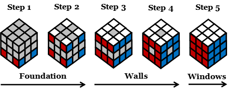

The True
Visual Structural Method
A Gentle and Visual Way to Learn the Cube
A next generation intuitive method that uses a state based house building approach to solve 2×2 and 3×3 cubes
House Building Approach

© 2005–2026 TeckeL. All rights reserved. All instructional solutions and 3D movement sequences are original proprietary works. Unauthorized copying or recording is prohibited.
Be the first to experience the full method
A Landmark Release for a Landmark Method
After years of development and careful refinement, the True Visual Structural Method is finally available as a complete, beautifully structured book. This is the definitive guide to learning the cube visually, intuitively, and without memorization.
Unique Features of This Method
1. A purely visual way to learn
You learn the cube by seeing patterns and structures, not by memorizing algorithms.
2. A state based method that makes sense
Each step is a clear, stable state. You always know where you are and what comes next.
3. The simple house building idea
You build the cube like a house: foundation, walls, windows. This makes the cube feel logical and easy.
4. Works for both 2×2 and 3×3
The same visual rules apply to both cubes. No new method to learn.
5. Only three easy visual moves
The whole method uses just three simple moves that are easy to see and repeat.
6. No restarting, always continue
If something changes, you continue from that exact point. No need to start over.
7. Easy to recover from mistakes
You can scramble the cube at any step and keep practicing. The structure makes it forgiving.
8. Gentle and intuitive for all learners
The method is calm, visual, and friendly. It’s made for beginners, visual thinkers, and learners of all ages.
9. Ambidextrous by design
Every move works naturally for both left handed and right handed learners.
10. Built and refined directly by the inventor
This method has been carefully polished in recent months to make its structural approach clear, simple, and teachable.
Training Cube
Visual Training Session
View from the green front surface for the 1L, 2L, 1R, 2R, 3TL, and 3TR movements. Learners can rotate the cube to see how the left and right sides move while performing each action. Select the Training button below to begin.
Demo Session
The above Step 1 to Step 5 demonstrate how the Cube is solved using the Visual Structural Method
The buttons above (S1, S2, S3) each load a complete, independent solving session. Every session begins with its own scramble and then runs through all five steps of the Visual Structural Method. Each S‑path is fully self contained and does not share moves or steps with the others.
This demonstration shows that the Visual Structural Method is fully functional, consistent, and able to solve the cube using pure structural logic. The steps must be followed in order; you cannot press the same step twice. If you want to repeat a step, press Reset for that step first.
The demo solves the cube the same way the method teaches: like building a small house, one part at a time. There are no difficult algorithms to memorize. You simply watch how the cube grows step by step.
Step 1 begins by solving the yellow side from the bottom view. This step uses a few free moves that are not in the book, including temporarily moving the bottom layer to the top to solve pieces. Because you cannot rotate the yellow face to the top, this part can feel unusual. Beginners should watch Step 1 and observe how the cube behaves. If you already understand cube mechanics, you can follow Step 1 by slowing down the animation.
From Step 2 onward, everyone can follow along easily. These steps use the standard Visual Structural Method and are much simpler to understand.
In Step 3, look at the different sides of the cube to see how the matching edge pairs are formed and how the vertical side pieces are built. Set the animation to the slowest speed so you can see each move clearly.
For this demo, Step 4 is intentionally left slightly unfinished, and the final correction happens in Step 5. This helps you see how Step 5 works and why it only appears in certain cases.
All three sample solutions, S1, S2, and S3, finish with the same Step 5 pattern.
Visual Structural Method

The Visual Structural Method turns the cube from a confusing puzzle into a clear and logical structure you can see and understand. Built on the simple idea of Foundation → Walls → Windows, it teaches the cube the same way a building is constructed: step by step, visually, and with complete structural clarity.
Instead of long formulas, you learn through patterns, rules and three simple visual movements. You see how corners form the permanent frame, how edges pair predictably, and how the cube rebuilds itself through stable and clear states. Every turn has purpose, nothing is random, and progress is never lost. Because the method is structural and visual, it uses far fewer moves than most beginner approaches and makes the entire solution easier to understand.
Created for children, parents, teachers, and all ages, this method replaces frustration with confidence. Whether you are learning for the first time or returning after years away, you will discover a calm and visual strucrtural approach that makes the cube welcoming, logical, and beautifully understandable.
You will learn to understand the cube through clear visual patterns, build and protect the corner frame as the foundation of the structure, form Twin Edge Pairs with simple structural logic, reconstruct safely without losing progress, and solve the entire cube smoothly using only three visual moves.
TeckeL is an engineering leader and systems architect with deep experience in embedded systems, thermal imaging, and system level problem solving. He discovered the Visual Structural Method at age fourteen through pure observation and spatial intuition, without books or algorithms. His breakthrough began with one thought: the cube behaves like a house. That insight guided every step of his discovery. It shaped the visual, structural method he teaches today. Over the decades, he refined this insight into a clear and accessible educational system that teaches the cube through structure, visual logic, and intuitive understanding. Today, he shares this approach with learners of all ages and backgrounds, offering a gentle and logical way to understand the cube through its underlying architecture.
The Philosophy of the Visual Structural Method
A visual way to understand the cube, grounded in structure, rhythm, and clarity
How It All Began
There are moments in life when a small act of kindness quietly reshapes everything. For me, that moment began when my eldest sister placed a new cube in my hands. We did not have much, yet she believed I could learn something meaningful from it. I did not know then that this simple puzzle would shape the way I understand patterns, structure, and learning itself. This method continues that moment and carries forward the clarity, confidence, and curiosity that grew from it.
Learning Without Formulas
When I first learned the cube, I had no formulas, no algorithms, and no guidance of any kind. There were no books to follow, no teacher to explain the steps, and no method to imitate. All I could do was observe how the cube moved, how colors shifted, and how pieces reacted to each turn. Through patience and curiosity, the cube revealed its structure to me. I learned by watching, not by memorizing, and those early observations became the foundation of the entire method.
How the Movements Were Discovered
Every movement in this method was discovered visually. I observed how the cube behaved and saw the outcome first. Only after understanding the visual pattern did I translate the movement into arrows. Each movement began as a simple observation before it became a teachable step. This visual first origin is what makes the method gentle, intuitive, and accessible for learners of all ages.
The Structural Approach
This method is built on a visual structural approach. It teaches the cube through movement, rhythm, and pattern, without relying on memorization. The L‑Shape, n‑Shape, and T‑Shape Rules, along with the 1L/1R, 2L/2R, and 3TL/3TR movements, are not formulas. They are visual actions that show how the cube protects, travels, and rebuilds its structure. Each movement preserves what has already been built, allowing the cube to grow in stable layers.
Three Ways to Learn
This method offers three complementary ways to learn: the arrow guide, the big cube travel guide, and the rhythm guide. Each approach supports a different style of understanding. The rhythm guide is often the most accessible, allowing learners to twist the cube in a steady rhythm while watching the colors travel through the structure. This helps visual understanding and timing develop together.
Additional Support
The arrow guide and big cube travel guide provide clear pathways for those who prefer step by step visual movement. For anyone who needs additional support, the website offers another visual reference where every movement can be practiced slowly and repeatedly. These guides work together to make the method gentle, predictable, and easy to follow.
Where the Method Began
The Structural Method began when I was fourteen, built entirely from early observations. I discovered simple movements that protected the cube’s structure and repeated patterns that made the cube predictable. Decades have passed since that rural discovery, and because this method builds permanent spatial memory rather than fleeting muscle reflexes, I still remember and use it perfectly today at sixty years old.
Preserving the Original Method
Before migrating to the United States in 2005, I saved my earliest written explanations in Word documents with authentic timestamps. I did not know then that those files would travel with me across continents, preserving the original form of the method exactly as it was first understood. In 2009, I refined the method by removing a few movements that were not essential, making the steps clearer while preserving the original visual foundation.
A Method Ahead of Its Time
Although this method was first discovered in 1980, long before modern educational research emphasized visual learning, pattern recognition, and cognitive clarity, it aligns naturally with what today’s learners need most. Gentle learning, intuitive understanding, and accessible teaching for all ages. In many ways, the method was ahead of its time, and its simplicity makes it even more relevant today.
The Cube as a Teacher
The cube is more than a puzzle. It is a small and colorful model of problem solving. When learners see how the cube reconstructs after each movement, they begin to understand that challenges can be approached gently, step by step, without fear of mistakes. The cube becomes a teacher that shows patterns, structure, and possibility. It teaches that clarity grows from patience, and structure grows from understanding.
Who This Method Is For
This method is written for families, classrooms, enrichment centers, and anyone who wants a visual and intuitive way to learn. It teaches the simplest and most visual foundation of the method so every learner can enjoy completing the cube with confidence. It is not a speed method and not a formula method. It is a structural method that helps learners see what is happening and understand why it works.
A Message to the Reader
My hope is that this method brings the same sense of clarity and discovery to you that it brought to me. Whether you are learning the cube for the first time or teaching it to others, may this approach help you see the beauty of structure, the joy of understanding, and the confidence that grows when learning feels natural and welcoming.
Benefits Across All Ages
Benefits for Children & Teens
1. Accelerates Spatial Reasoning: Helps kids visualize 3D movements and strengthens math skills.
2. Builds Grit and Patience: Teaches children to embrace mistakes as part of learning.
3. Strengthens Concentration: Encourages deep focus and reduces digital distraction.
4. Provides Healthy Dopamine: Completing a solve gives a natural sense of accomplishment.
Benefits for Adults
1. Acts as Active Mindfulness: Creates a calming flow state that reduces anxiety.
2. Enhances Creative Problem Solving: Encourages multi angle thinking and logical sequencing.
3. Boosts Workplace Reflexes: Improves eye hand coordination for typing, coding, and precision tasks.
4. Fosters Social Connection: The cubing community offers a welcoming, age inclusive environment.
Benefits for Seniors
1. Fights Cognitive Decline: Exercises memory and mental agility.
2. Preserves Finger Dexterity: Keeps joints active and reduces stiffness.
3. Aids Neuro Rehabilitation: Supports recovery for stroke and early dementia patients.
4. Prevents Loneliness: Encourages companionship and intergenerational bonding.
Lifetime Benefits Comparison
| Benefit Category | Children | Adults | Seniors |
|---|---|---|---|
| Brain Impact | Develops spatial concepts | Maintains cognitive flexibility | Slows cognitive decline |
| Physical Gain | Refines early motor skills | Improves typing & coding agility | Relieves arthritic stiffness |
| Mental Health | Builds patience & grit | Creates meditative flow | Reduces emotional isolation |